standing rigging replacement
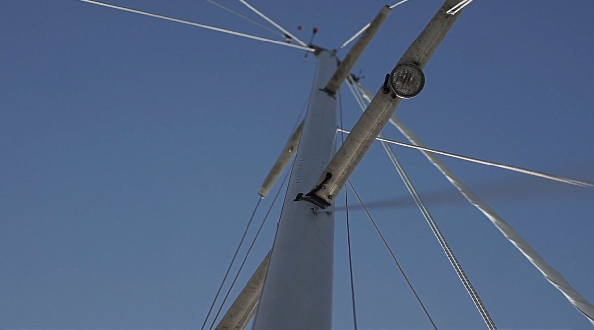
2018.03.18
Whangarei, New Zealand
Click below dates for more recent updates:
While in Tonga, our friend Alex came over to talk to us, and standing in his dinghy from the water, noticed a cut in our port side intermediate shroud. An intermediate shroud is one of many wires that are holding up the mast. This one, leads above the second spreader (a spar that deflects the shrouds) on the side of the mast. Our boat has two sets of spreaders, because we have a very tall mast — not everyone has intermediate shrouds. The cut was just near the lock (the part that squeezes, and connects the wire to the turnbuckle), a single cut in one of the strands. This was bad news. We had it fixed, temporarily, cutting the wire and adding a second turnbuckle — with Herbert's help (thank you sensei). We needed to fix this, and while in Whangarei, thought we'd replace the port side intermediate and the backstay as well.
We removed our intermediate shrouds, securing the mast with halyards on both sides, our mast is keel-stepped though, meaning that it goes through the deck and goes inside the cabin. We coiled the wires up, and carried them to C-spar at Dockland 5 by bike.
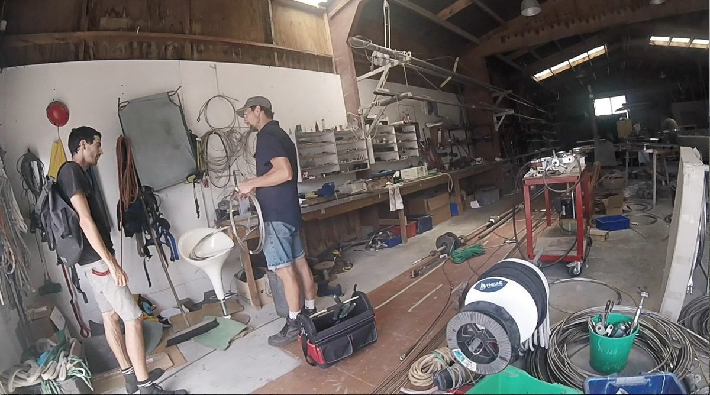
Daniel, a rigger and friend, was kind enough to deliver the new wires, since he was in the area. We found out later that Daniel was husband to Laura Dekker, funny, since S/V Guppy sat diagonally to us on the pile moorings (this was the same year the boat sank in the Pacific :<).
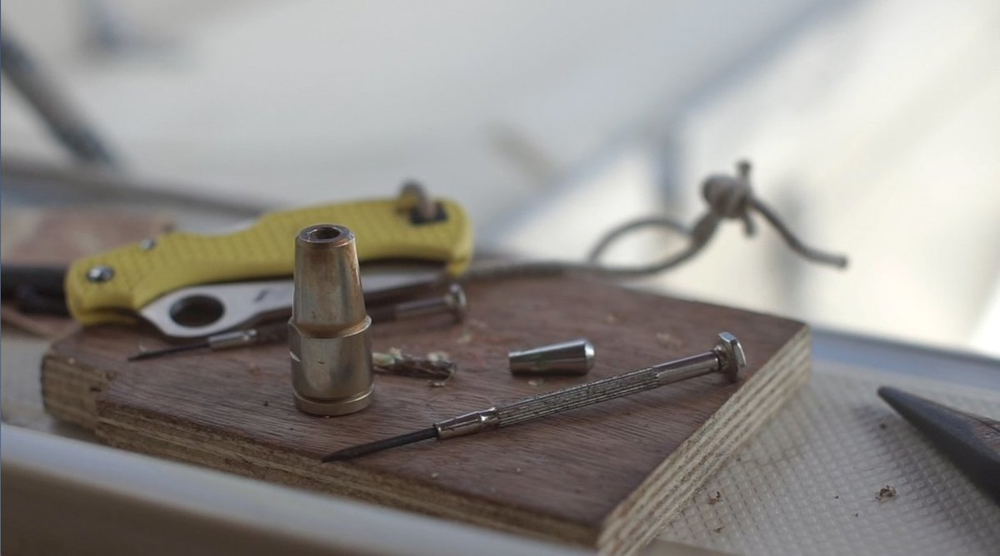
The issue with replacing the intermediate shrouds though, was that the T-terminals they had were too big to fit in the backing plates of our mast. A t-terminal is a piece at the top or end of the wire, shaped like a T (as the name suggests), that fits into a backing plate that is attached in your mast with rivets (a permanent mechanical fastener). The backing plate is in a hole, in your mast, and has a little elongated slot for the T to fit into, it fits at an angle and when turned the little arms of the T keep it in place.
Daniel came over to take a look, and ended up drilling the rivets out of the starboard side backing plate to get it out, so they could see how to fit the terminals into them back in the shop. The T-terminals were shaved down slightly, and the hole in the backing plate was made bigger, with much care, using a drill and bit.
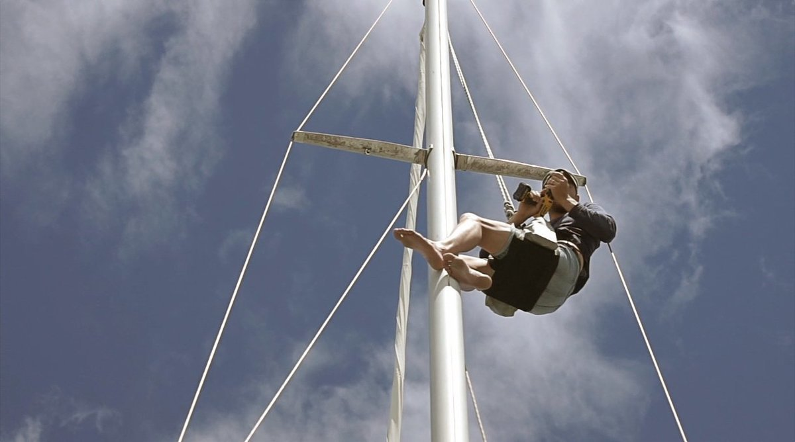
The backing plate was installed again, but it took some time before we could do that. We needed an air compressor, to use a gun to get them back on there. As it turns out, our rivets are big, and doing it by hand is near impossible - on a pile mooring, there was no way to power that compressor. We waited till our haul out to do it, since C-spar was at that yard, and that they could bring the compressor there to do it. This is what happened. Daniel climbed up the mast while the boat was on hardstand, this wasn't our idea, but then again, the cradles were made strong, better than how they do it in BC. It seemed safe enough, there was little chance that the boat would tip over. It's always better to go up the mast while in the water, since the boat has righting ability, and won't risk tipping.
Once the backing plate was back in, I hauled Devine up the mast (when back in the Town basin), and he widened the backing plate, same as the other one. This was tricky, because our drill has a cord. We connected the drill to a long extension, and then to the generator on deck. We were able to replace both intermediate shrouds then. We had to do this quickly, because Devine had trouble holding the weight of the drill, and the whole length of the extension aloft.
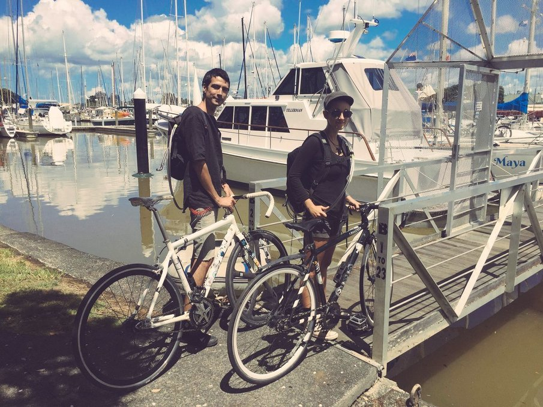
The backstay was easier to do, but was heavier to carry by bike. The new wire would be lighter, without the insulated part. Our other wires, we deemed good enough. No cuts. We'd wait until our return to BC to replace them with the running rigging.
Takeaway: Re-doing your rigging at a dock is much easier, much, much easier. Having access to shore power would have been handy. I bought norseman cones online from Rig-rite, had them shipped from the US for way too much money. Avoid rig-rite if you can, their customer service is terrible and they'll charge you crazy high fees to ship the part without warning you of it. Glad I bought more cones than we needed though, when it comes time to replace the other cables we'll have them on hand already.
2X Intermediates + swaging 214
Backstay + swaging 186$
Norseman cones 100$
2024.04.26
Victoria, B.C. Canada
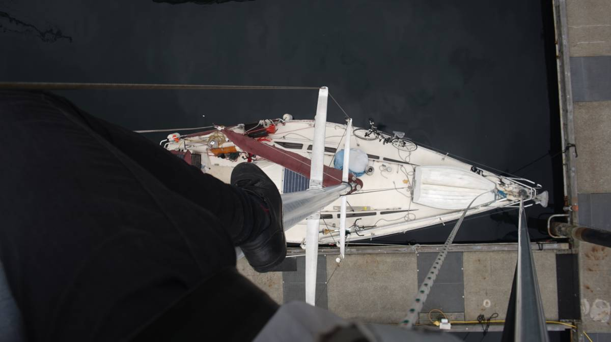
We are getting ready for our departure to Southeast Alaska, in preparation for this trip we changed the jib halyard. The jib halward was wire to rope(see metal halyard swaging), we changed it to all-rope.
Making the switch from a wire to a rope halyard may mean having to change the sheave at the top, which might be shaped to only accomodate a wire. So, we took a trip up the mast to get a good look at our sheaves, to see if we had to replace them.
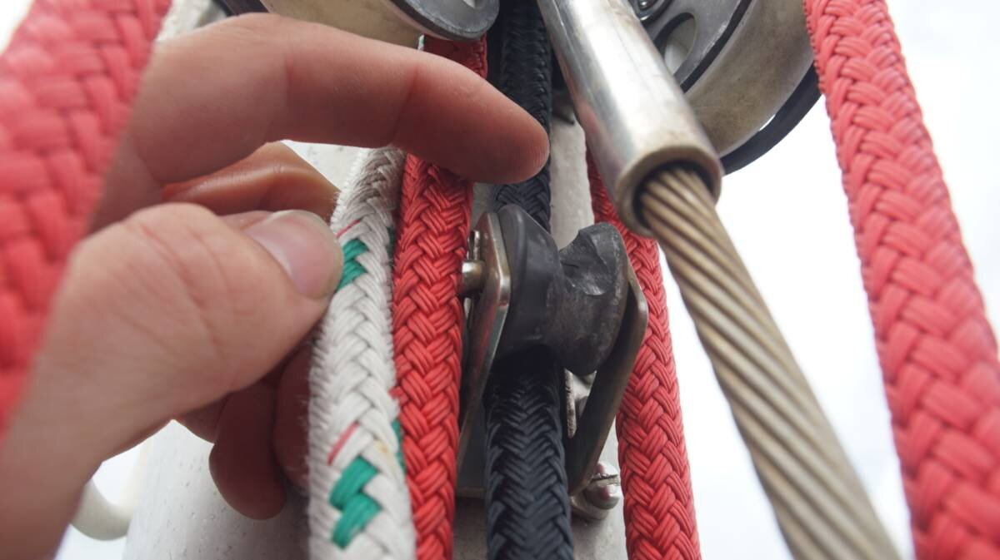
Pino's jib halyard has a sheave that is hidden in the masthead, from what we could see it seemed like it was designed to accomodate both and it wasn't damaged (we'd have to dissassemble the masthead to get it out). Then, there is a halyard restrainer, installed to prevent the halyard from wrapping around the foil.
The sheave on the restrainer was very close to breaking in half. The wire rope had eaten through most of it.
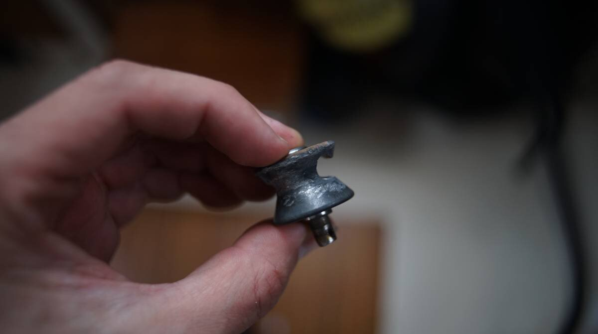
We bought a new SS block and cannibalized its sheave as a replacement (as it turns out, buying a sheave alone was more expensive than doing that).
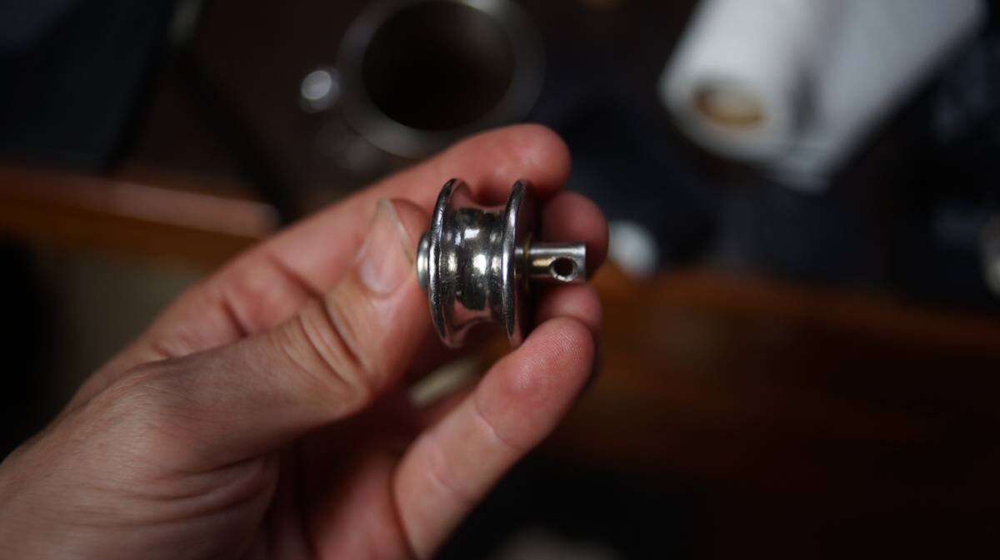
Because the weather was kind we got to replace the sheave at the top of the mast on the same day that we took it off. It is very rare for us to go up the mast twice in the same day.
2026.03.26
Victoria, B.C. Canada
Earlier this year we noticed a broken wire in the backstay. We took it off with plans to make a new one. The cut might be due to metal fatigue, maybe we didn't swage the wire properly(it has a Norseman fitting)... who's to say, either way, it is a safety risk and we need to change it.
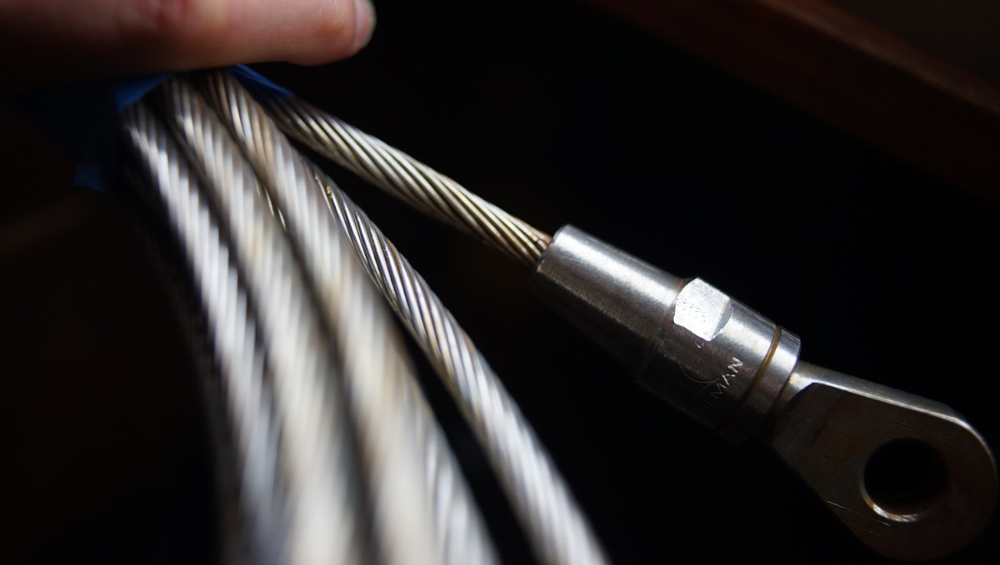
It's been very cold and rainy these past few weeks, but we found a clear day to get up the mast to remove it. Prior to that, we secured the mast using the main halyard and boom topping lift.
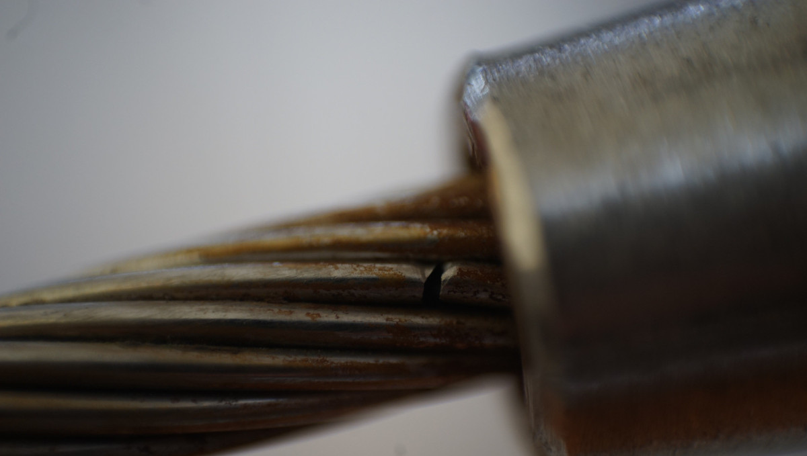
On March 25th, we took the bus up to Canoe Cove and dropped off the cable so the rigging shop could use it to make a new one. Instead of re-using our Norseman mechanical fitting we requested that they swage both ends. The stay would be ready the next day at 1000, and so our friends Rik & Kay were gracious enough to allow us to spend the night at their place so we could pick it up the next day (they live close to the shop).
The next morning Kay dropped us off at the shop and we picked up the new shiny, but expensive, wire. It cost us a whopping 557$CAD. We didn't expect it to cost this much. Prices have gone way up. The wire is 7.14 mm (9/32") thick (1x19 ss wire), and the shop charges about 3.75$/ft (our wire is 14.17 m / 46.50 ft). Then of course they charge for the swages, and for labour.
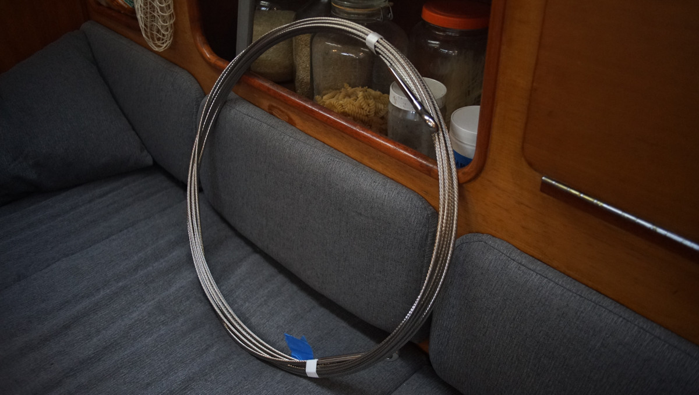
The total material cost was 272.46$, plus 225$ charged for 1.5 hours of labour(they charge 150$/hour). It would have cost a lot more if we had asked them to come and take the stay down, but we did it and delivered it to the shop ourselves. In all, when we need someone to do work for us, we try to do as much of the process as we can ourselves so we save on labour hours. Riggers have a pretty high hourly rate generally, especially in this area, but there is really no one else locally who can sell us the wire and swage the ends. We could have swaged both ends ourselves using mechanical fittings, this is what we did previously for the end on deck, but we want to see if ends swaged this way last a bit longer.
Dev & I took the hour and a half-long bus back from the shop with the new(and old) cable coiled over our shoulders. Got a lot of funny looks and questions from other riders.
"What is that for?"
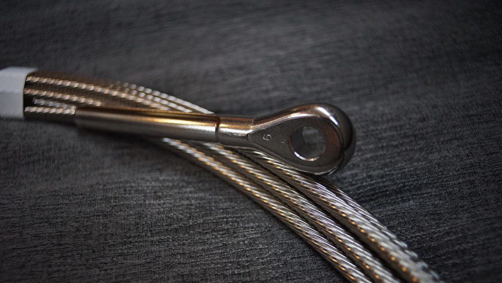
The people at the rigging shop also helped us figure out what to do with our headstay, which is next in line for replacement. Exchanging it though is not as straightforward, because of the roller furler that is sleeved overtop. He gave us a few tips, we'll document that next on this page.
The very next day called for a sunny, calm afternoon, and so we installed our new stay! We removed the Norseman fitting from the old stay to keep, it's still good and we have some extra cones. Norseman no longer makes fittings or sells new cones, but we think it is still possible to buy third party designs.
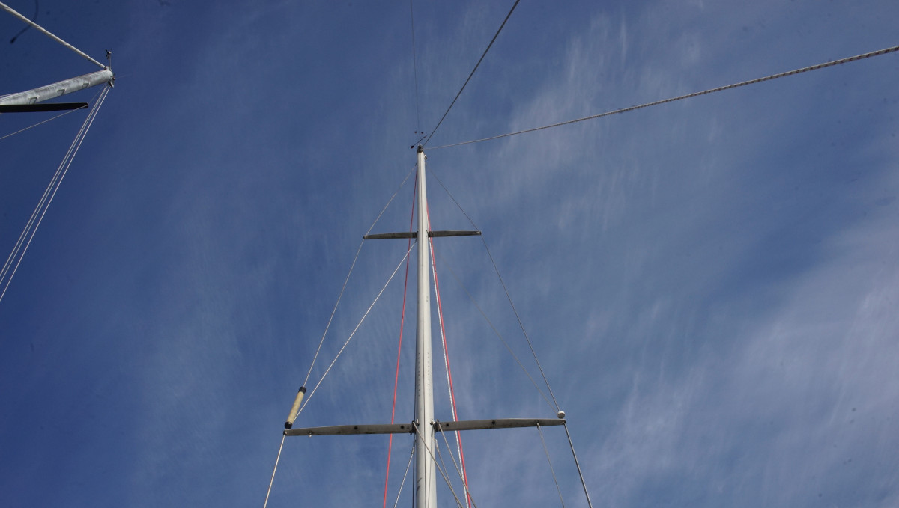
2026.04.15
Victoria, B.C. Canada
On another calm and sunny day, we loosened the forestay at the deck level and Devine went up the mast again to unhook the top. They tied a halyard to the top of the stay so we could lower it gradually, once Devine was back down on deck again. The furler makes the forestay very stiff, it adds a ton of extra weight so we had to proceed carefully when lowering it, careful to not let it bend too much. I (Rek) grabbed onto the base of the furler and began to walk it down the dock as Devine lowered the halyard. It was a bit tricky, because the finger facing the bow of the boat is perpendicular, forcing me to walk it sideways. It all worked out in the end.
We took the furler drum off, cutting the old Sta-Lok fastener off so we could slide out the cable (cutting one end is necessary). We decided to take the entire furler apart, foils and all, to see how it was put together, but also to see the state of it. Some of the screws holding the aluminum foils to the inside spaces were difficult to undo because they are secured with red Loctite, but all gave eventually.
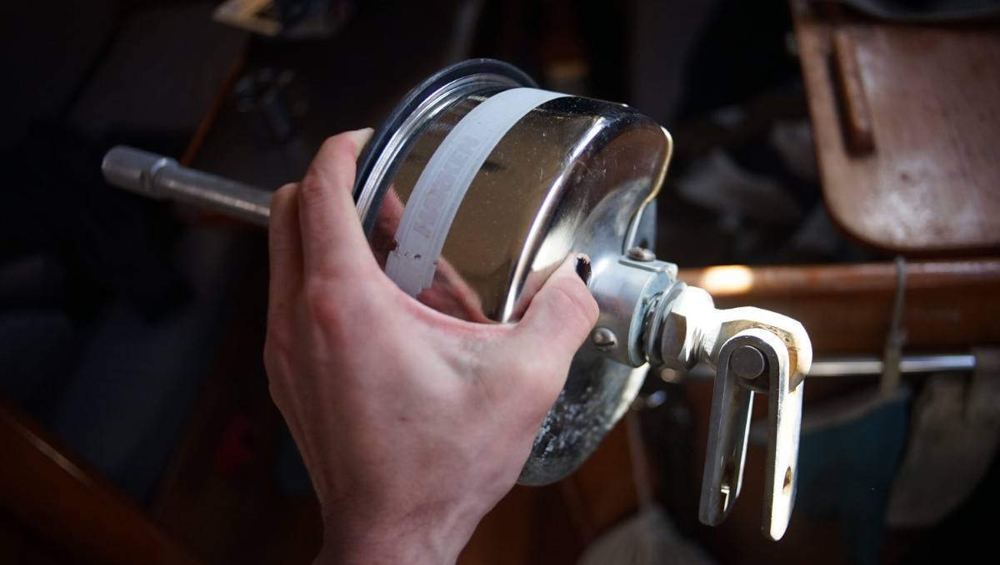
We cleaned the salt and scum from the furler hardware. We also removed a dent in the drum of the furler, caused by a bad docking manoeuver that ocurred in 2016.
On the 15th of April Devine brought the forestay to Canoe Cove again, but decided to wait around for it to avoid having to come back another day. This was a good idea. Because Devine was waiting they charged us a lot less (405$ total), despite the fact that the wire itself is much thicker(8 mm, 5/16") than our backstay. The stay was also cheaper because we didn't have them swage the bottom end, we can't do it because we need to insert the connectors and foils back onto the wire first.
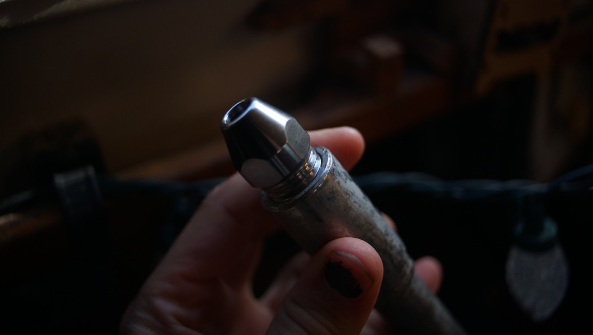
We're not sure why our forestay is so thick, maybe because the former owners sized it to a specific furler? Either way, we now have to go with the same thickness everything fits. Oversized wiring is not a bad idea. When we bought the 5/16th Sta-Lok at Trotac they didn't believe that this is the size we needed for a 33-footer — fair enough! They sold us an older design for 83$. This design was shorter than the one we had before, so we had to make up for it by asking the rigging shop to add 12.7 cm (5 in) to the wire length.
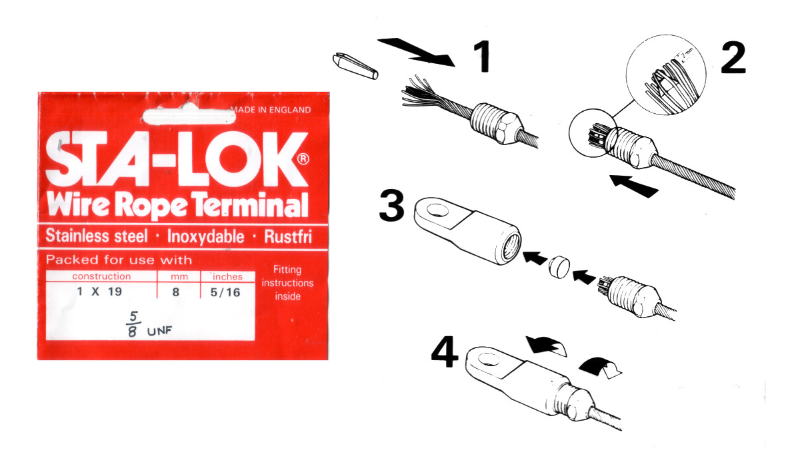
The total cost for this project was 488$, much cheaper than the backstay...
83$ for the swageless fitting
48$ for the 5/16" swage
239$ for 46 ft of 5/16" wiring
75$ for 0.5 hours of labour
On April 17th we reassembled the furler. Putting it back together was tricky, but thankfully we still had the original manual that shipped with the unit, passed down to us by the former owners. We have combine parts in a very precise order. Some bits, like the foil connector screws and spacers(wedges), require red loctite(which we had to go out and buy), other screws require blue. We now have all the colors. We also had to momentarily pause the work to go and pick up a tube of polysulfide(Boatlife Lifes-Calk) marine sealant at Trotac when putting the Sta-Lok on, we only needed a marble-sized drop but sadly no one in the marina had any. For assembly, we were instructed not to use silicone or polyurethane sealants.
It worked out in the end, we had help from neighbors to bring the stay back up, to keep the foils as straight as possible during hoisting.
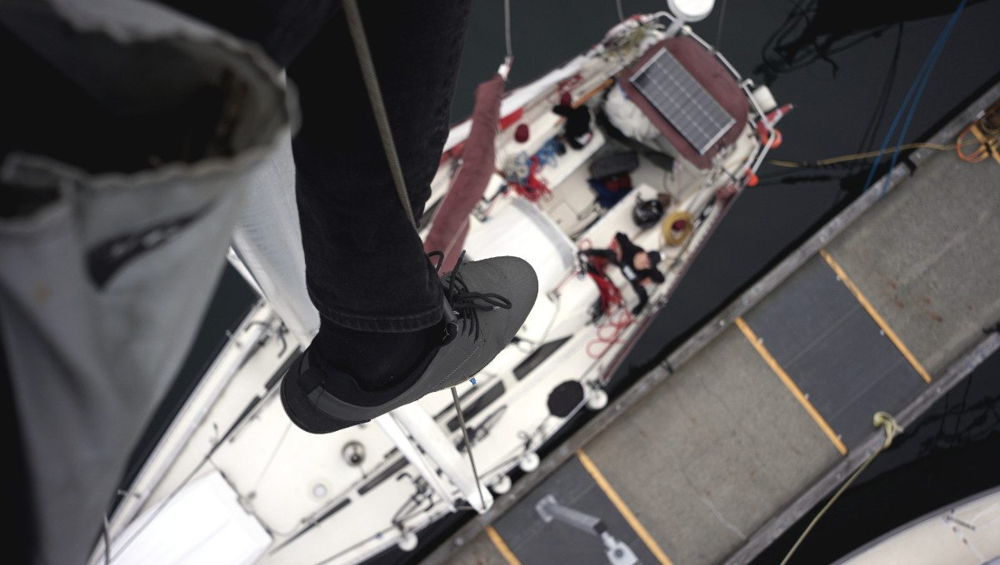
Attaching it at the top was tough because the stay and furler are very heavy together, but we managed it. We started the work at noon and finished at 18h30.